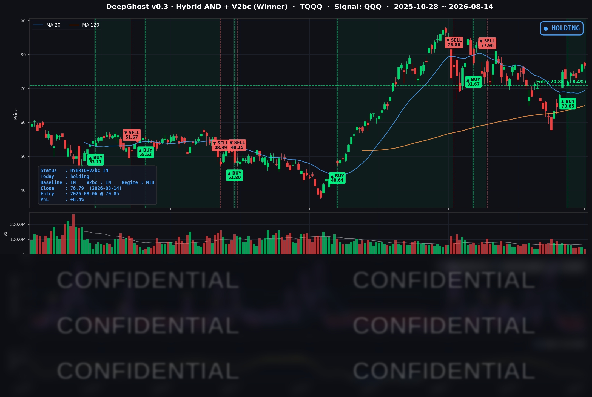

👻 매일 시그널과 히스토리를 홈페이지에서 한눈에 → www.ghostai.co.kr
소비 쇼크에도 큰 공포는 없었고, 대형 성장주에서 소형·경기민감주로 리더십이 이동한 하루였습니다.
📊 오늘의 매매 신호
| 항목 | 내용 |
|---|---|
| 오늘 할 일 | ✅ 아무것도 안 해도 됩니다 |
| 포지션 상태 | 📈 TQQQ 보유 중 (IN POSITION) |
| 매수 진입일 | 2026-08-06 (8거래일째) |
| 진입가 → 현재가 | $70.85 → $76.79 |
| 현재 포지션 수익 | +8.4% |
TQQQ 시그널 — IN POSITION
현재 상태: 매수 포지션 유지 중 | 이번 포지션 수익률 +8.4%

전략의 TQQQ 트랙은 8월 6일 진입 이후 8거래일째 보유 상태를 이어가고 있습니다. 이날 나스닥이 브로드컴(AVGO)의 6% 급락을 흡수하고도 -0.28%로 낙폭을 제한한 덕분에, 지수의 절대 방향이 크게 훼손되지 않았습니다. 대형 성장주 일부 차익실현과 장기 금리 상승이라는 상대적 역풍은 있었지만, 모델은 아직 이 압력을 청산 신호로 전환할 근거를 찾지 못했습니다.
오늘 미국 시장 — 시황 요약
지수 마감
| 지수 | 종가 | 등락률 |
|---|---|---|
| S&P 500 | 7,785.76 | -0.17% |
| 나스닥 종합 | 26,729.16 | -0.28% |
| 다우존스 | 53,732.41 | -0.20% |
| 러셀 2000 | 3,068.42 | +0.51% |
대형주 지수는 기록적 고점 부근에서 소폭 하락하며 숨을 골랐습니다. 반면 소형주(러셀 2000)는 +0.5% 넘게 오르며 상대적으로 강했습니다. 지수 안쪽에서 대형 성장주에서 소형·경기민감주로 무게가 옮겨가는 로테이션이 일어난 하루입니다. S&P 500은 이날 밀렸지만 주간 기준으로는 3주 연속 상승을 지켰습니다.
국채 금리 동향
| 만기 | 수익률 | 전일 대비 |
|---|---|---|
| 3개월 | 3.697% | -0.8bp |
| 10년 | 4.696% | +5.5bp |
| 30년 | 5.265% | +5.2bp |
장단기 스프레드(10년 - 3개월)는 +99.9bp로 커브는 정상적인 우상향 형태를 유지했고, 경기 침체를 경고하는 역전은 없었습니다. 눈에 띄는 점은 소비·물가 지표가 부드럽게 나왔는데도 장기 금리가 오히려 5bp 안팎 올랐다는 것입니다(장기물 중심 스티프닝). 단기 정책금리 인상 우려는 후퇴했지만, 끈적하게 남아 있는 인플레이션 기대와 재정 부담이 장기 금리를 밀어 올린 결과로, 밸류에이션에 민감한 대형 성장주에는 미세한 역풍이 됐습니다.
연준 발언 & 금리 패스
이날 예정된 주요 연준 인사 발언은 없었고, 이번 주 시장은 연준의 입보다 경제지표가 주도했습니다. 현 국면은 금리를 내리는 완화 사이클이 아니라, 추가 인상 여부를 저울질하는 매파적 동결에 가깝습니다. 다만 이번 주 소비·물가 지표가 부드럽게 나오면서 9월 즉각 인상 가능성은 뒤로 밀렸습니다. 다음 주 FOMC 의사록(8/20)과 잭슨홀 심포지엄(8/21~22)이 금리 경로를 가늠할 최대 이벤트입니다.
오늘의 핵심 이슈
- 소비·심리 지표 쇼크 — 7월 소매판매가 -0.6%로 1년여 만에 최대 감소를 기록했고, 8월 미시간대 소비자심리는 51.0으로 예상(54.5)을 크게 밑돌았습니다. 소비 둔화는 연준의 추가 긴축 부담을 낮췄지만, 심리 악화 자체는 위험자산에 양가적으로 작용해 지수는 얕게 하락 마감했습니다.
- 반도체의 두 얼굴 — 같은 반도체 안에서도 온도차가 극심했습니다. AI 인프라 부채 우려가 부각된 종목은 6% 가까이 급락한 반면, 메모리 수급 개선 기대를 받은 종목은 +2.3% 강세를 보이며 지수 방향을 흐렸습니다.
- 지수 하락에도 진정된 변동성 — 소비 쇼크에도 공포지수는 오히려 내렸습니다. "안도감 속 관망"이 이날 시장의 분위기였습니다.
변동성 & 투자심리
- VIX (변동성 지수): 14.25 (전일 14.63 → -2.6%). 지수가 소폭 하락했는데도 변동성은 오히려 진정되며 저변동·안정 국면을 이어갔습니다.
- 공포탐욕지수: 65 (Greed / 탐욕). 탐욕 구간을 유지했습니다.
지수 하락에도 큰 공포는 보이지 않았고, 유가·금 강세와 소형주 로테이션까지 감안하면 위험선호 심리는 크게 훼손되지 않았습니다. 다만 급락한 소비심리와 다음 주 이벤트 리스크가 상단을 제약하는 관망 구간입니다.
매크로 & 원자재
- 유가: WTI $82.40 (+1.42%), Brent $88.59 (+1.75%)
- 금: $4,432.00 (+1.57%)
유가와 금이 동반 강세를 보였습니다. 인플레이션 헤지 수요와 위험 분산 심리가 반영된 흐름입니다.
주요 종목 동향
| 종목 | 종가 | 등락률 | 비고 |
|---|---|---|---|
| AAPL | 305.93 | +0.22% | 대형주 중 방어적 강보합 |
| NVDA | 225.16 | -0.06% | 사실상 보합, AI 대장 관망 |
| MSFT | 495.40 | -0.30% | 대형 성장주 숨 고르기 |
| GOOGL | 345.90 | -0.13% | 보합권 |
| META | 589.85 | -0.86% | 대형 성장주 차익실현 |
| AMZN | 262.65 | -0.94% | 소매판매 쇼크에 소비주 소외 |
| TSLA | 342.27 | +0.68% | 소형·경기민감 로테이션 수혜 |
| NFLX | 78.16 | -0.10% | 보합 |
| AVGO | 392.99 | -5.94% | 커버리지 최대 낙폭, AI 파이낸싱 부채 우려 |
| QCOM | 165.79 | +0.61% | 반도체 내 상대 강세 |
| INTC | 102.50 | -1.97% | 반도체 약세권, 개별 부진 |
| MU | 971.66 | +2.30% | 메모리 수급 개선 기대 랠리 |
Ghost.AI — Quantitative AI Investment
Model: DeepGhost v0.3 | Transformer-Based Deep Learning
Coverage: 13 tickers | Updated every trading day after US market close
⚠️ 본 자료는 정보 제공 목적으로만 작성되었으며 투자 권유가 아닙니다. 모든 투자의 책임은 투자자 본인에게 있습니다. 과거 성과가 미래 수익을 보장하지 않습니다.
[유의사항]
- 본 서비스는 불특정 다수를 대상으로 발행되는 단방향 정보 제공 서비스이며, 투자자 개인의 재산 상황·투자 목적·위험 선호도를 반영한 개별 투자 조언이 아닙니다.
- 고스트에이아이 주식회사는 고객과 쌍방향 의사소통(개별 상담, 맞춤형 자문 등)을 제공하지 않습니다.
- 본 콘텐츠는 투자 권유 또는 매매 주문의 청약·청약의 권유에 해당하지 않으며, 최종 투자 판단 및 그에 따른 손익의 책임은 전적으로 투자자 본인에게 있습니다.
고스트에이아이 주식회사